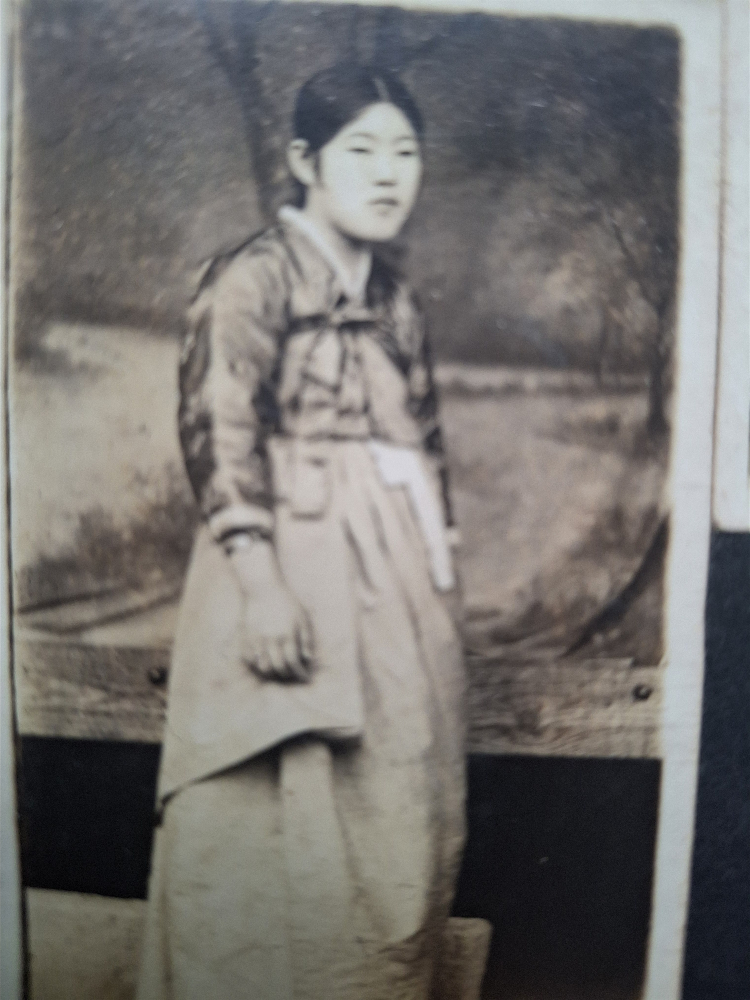

석암 이동범가의 여성들
함평 이동범가, 128년의 인연 | 번외편 ②
집안에는 세 여성이 함께 찍은 사진 한 장이 전합니다. 앞줄에 할머니 신문란(申文蘭) 여사와 이옥(李玉) 선생이 앉아 있고, 뒷줄에 이학(李鶴) 여사가 서 있습니다. 할머니에게 두 분은 남편 이상래 선생의 누이들, 곧 시누이가 됩니다.
할머니의 이야기는 제8편에서 전해 드렸습니다. 이번 번외편에서는 같은 사진 속 두 분, 이옥 선생과 이학 여사의 이야기를 중심으로, 석암 이동범가의 여성들이 걸어간 길을 따라가 보려 합니다.


1. 같은 학교, 같은 시대
1920년대 말 광주공립여자고등보통학교, 줄여서 광주여고보에는 이 집안의 두 여성이 함께 다니고 있었습니다. 1928년 무렵 종가로 시집온 할머니, 그리고 이상래 선생의 여동생이자 할머니의 시누이로 전해지는 이옥(1914~2000) 선생입니다. 이옥 선생은 1929년에 입학해, 할머니보다 한 학년 아래였다고 전합니다.
1929년 가을 나주역에서 시작된 충돌은 11월 광주학생독립운동으로 번졌고, 광주여고보 학생들도 이 운동에 참여했습니다. 집안에는 나주역 사건에 연루된 여학생이 할머니와 같은 학년 동기이자 친구였다는 이야기가 전합니다. 다만 그 여학생이 누구였는지와 두 분의 관계는 아직 기록으로 확인하지 못했습니다.
할머니가 학교장의 요구로 학업을 그만두게 되었다는 집안의 이야기는 제8편에 자세히 적었습니다. 할머니의 재학과 자퇴 경위는 아직 가족 전승이며, 학적 기록으로 확인되지 않았습니다.
2. 이옥 선생 — 기록에 남은 퇴학
집안에는 이옥 선생이 학교의 요구에 응하지 않고 버티다 퇴학되었다는 이야기가 전합니다. 퇴학했다는 사실은 기록으로 확인됩니다. 다만 학교의 요구에 버텼다는 구체적인 경위는 가족이 전하는 이야기로, 기록으로 확인된 것은 아닙니다.

1930년 1월 20일 『조선일보』는 광주여고보생 40여 명의 퇴학 소식을 전했는데, 여기에 실린 1월 16일 퇴학 처분자 명단에 ‘이옥’이라는 이름이 보입니다.

한편 국가보훈처가 공개한 학적부에는 1929년 4월 6일 입학, 1930년 3월 19일 ‘가사사정’으로 퇴학한 것으로 적혀 있습니다. 국가보훈처는 학적부의 퇴학 사유가 ‘가사 사정’으로 기재되어 있지만, 실제로는 광주학생운동 참여로 퇴학 처분을 받은 것으로 판단했습니다.

3. 2022년의 대통령표창
국가보훈처는 이옥 선생의 광주학생독립운동 참여를 인정해 2022년 제83회 순국선열의 날에 대통령표창을 추서했습니다. 1930년 퇴학 기록이 남은 지 92년 만의 일입니다.
이 포상은 이옥 선생 본인의 공적에 대한 것입니다. 같은 학교에 다녔던 할머니의 경우, 운동 참여 여부나 자퇴 경위는 아직 공식 기록으로 확인된 바가 없습니다. 두 분의 이야기를 나란히 적되, 기록의 무게는 구분해 두려 합니다.
4. 이학 여사 — 회고록을 남긴 시누이
이학(1922~2004) 여사는 이상래 선생의 여동생입니다. 할아버지의 젊은 시절을 생생하게 전하는 회고록 『황진이가 되고 싶었던 여인』(2001)의 저자로, 제7편에서 그 책의 한 대목을 소개한 바 있습니다.
책의 저자 약력에 따르면 이학 여사는 1939년 서울 배화여고를 졸업했고, 뒤에 서예가이자 자수가로 활동했습니다. 2002년 3월 『동아일보』도 여사의 자수·서예 활동과 회고록 출간을 보도했습니다.

이학 여사는 제17대 국무총리를 지낸 진의종(陳懿鍾) 선생의 부인이기도 합니다. 『함평이씨대동보』의 이학 여사 항목에도 남편이 여양(驪陽) 진씨 진의종으로 적혀 있습니다.
5. 세 여성, 서로 다른 기록
한 장의 사진 속 세 분은 같은 집안에서 같은 시대를 살았지만, 남은 기록의 모습은 서로 다릅니다.
이옥 선생의 퇴학은 신문과 학적부, 그리고 국가의 포상 기록으로 남았습니다. 이학 여사의 삶은 스스로 쓴 회고록과 신문 보도, 족보에 남았습니다. 할머니의 학창 시절은 대부분 가족의 기억과 사진으로만 전합니다.
기록이 많은 이야기와 적은 이야기를 같은 무게로 섞지 않고, 각각 확인되는 만큼 적어 두겠습니다.
정리하면서 남은 질문도 분명해졌습니다. 이옥 선생의 두 퇴학 날짜가 다른 이유, 할머니의 학적 원부와 나주역 사건 동기의 이름, 그리고 이옥 선생과 집안의 가족관계에 대한 공식 대조입니다.
백범김구기념관 공식 인터뷰
함께 보기
- 전체 기록 아카이브 https://lsaru23-ai.github.io/hp-db-archive/
- X @hp_db_archive https://x.com/hp_db_archive
- Threads @hp_db_archive https://www.threads.com/@hp_db_archive
관련 글
- 제7편: 이상래 — 「光明」에 이름이 남은 손자
- 제8편: 신문란 — 1930년 무렵, 학교를 떠난 며느리
- 연재 안내: 잠시 숨을 고르며 — 열 편의 기록을 마친 뒤 https://blog.naver.com/congcongyi/224477859251
- 번외편 ①: 석암 이동범의 선대 어르신들 https://blog.naver.com/congcongyi/224478136397
주요 참고자료
[1] 『조선일보』, 1930년 1월 20일, 「광주여고보생 다수 퇴학처분, 40여 명을 퇴학처분」.
[2] 국가보훈처 보도자료, 「제83회 순국선열의 날」 독립유공자 포상, 2022. 11. 15, 19~21쪽(이옥).
[3] 윤선자, 「광주여자고등보통학교 학생들의 광주학생독립운동 참여」, 호남사학회 학술대회 자료집, 2022.
[4] 이학(李鶴), 『황진이가 되고 싶었던 여인』, 범우사, 2001, 저자 약력.
[5] 『동아일보』, 2002. 3. 4.(이학 여사의 자수·서예 활동과 회고록 출간 보도).
[6] 『함평이씨대동보』 권11 효우공파, 1080쪽(이학 ‘夫 驪陽 陳懿鍾’).
[7] 가족 소장 사진(신문란·이옥·이학 3인 사진, 이옥 독사진, 이학·이옥 자매 사진).
이 글은 문헌에서 직접 확인되는 사실과 집안의 전승을 구분해 작성했습니다. 이옥 선생의 포상은 본인의 공적에 대한 것이며, 할머니의 재학과 자퇴 경위는 가족 전승입니다.